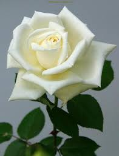
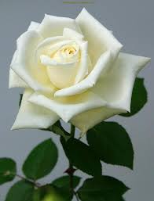
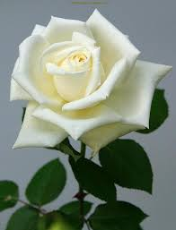
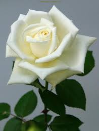
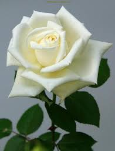
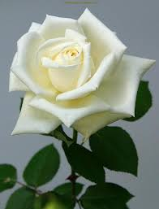

A flower, sometimes known as a bloom or blossom, is the reproductive structure found in flowering plants (plants of the division Magnoliophyta, also called angiosperms). The biological function of a flower is to facilitate reproduction, usually by providing a mechanism for the union of sperm with eggs. Flowers may facilitate outcrossing (fusion of sperm and eggs from different individuals in a population) resulting from cross pollination or allow selfing (fusion of sperm and egg from the same flower) when self pollination